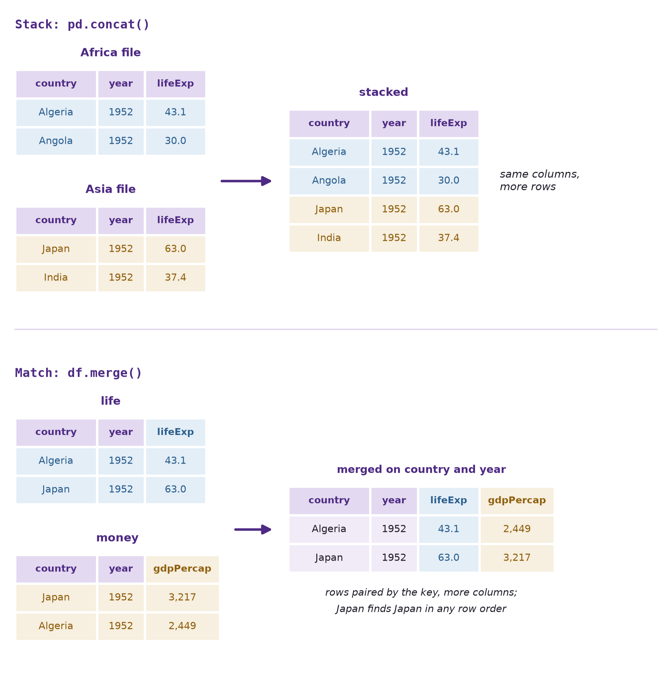
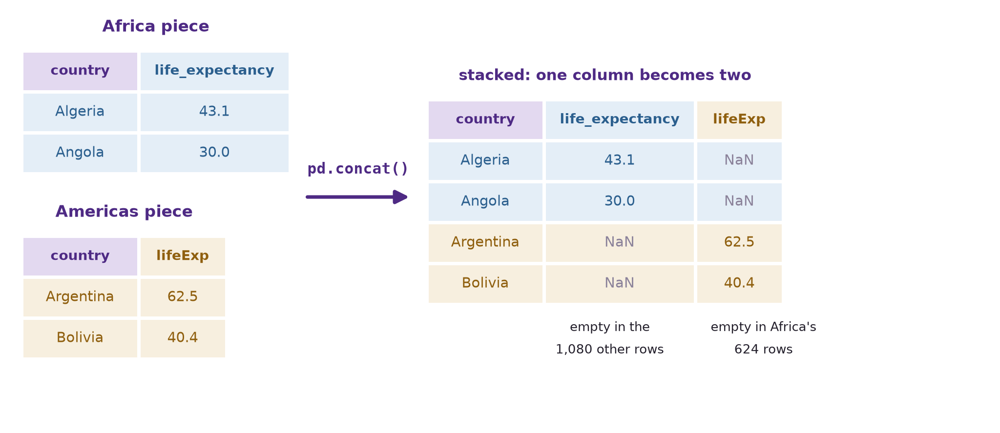
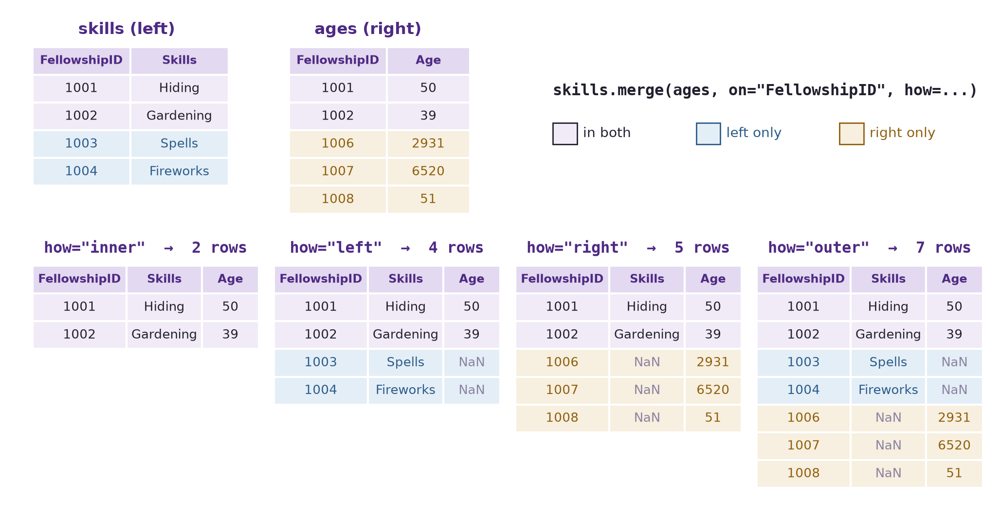
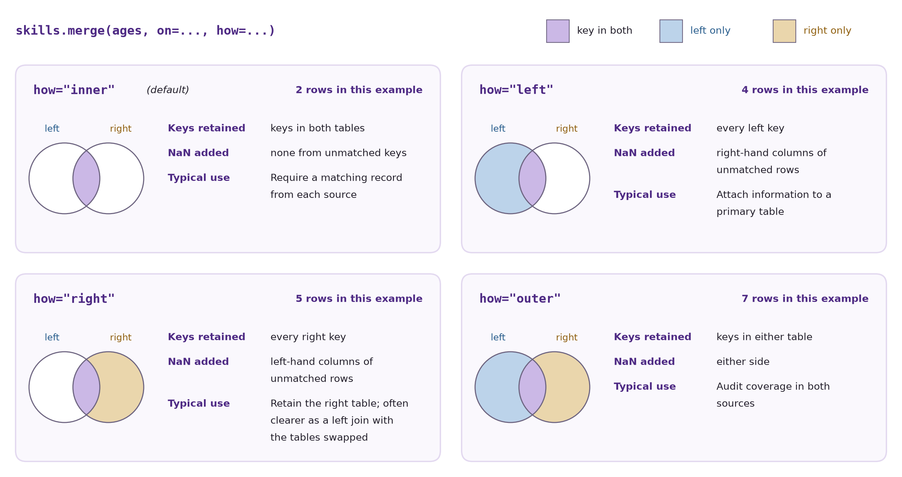
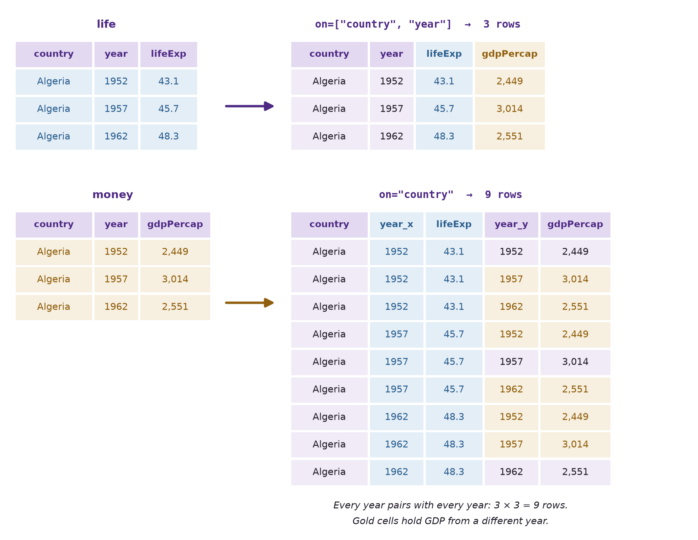
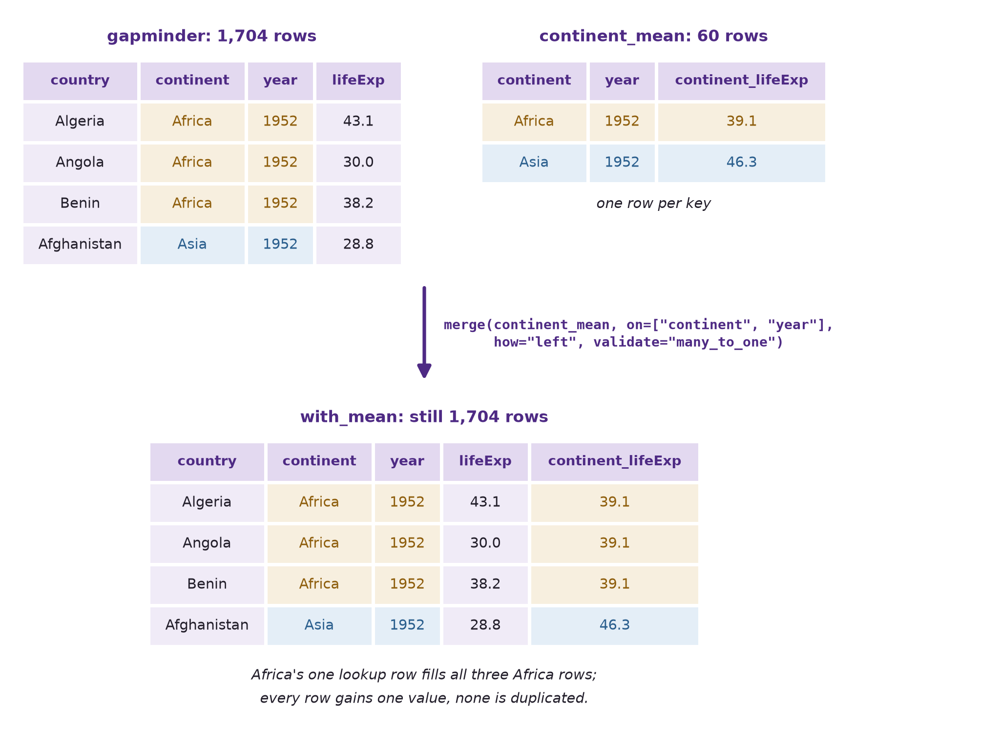

import numpy as np
import pandas as pd
import matplotlib.pyplot as plt
import seaborn as sns14 Combining Datasets
The data you need for an analysis often lives in more than one table. To compare life expectancy across continents, for example, you may first need to combine five regional files. To study how life expectancy relates to income, you may need to bring measurements from two tables together for each country and year. Both tasks combine datasets, but they combine them in different ways.
This chapter introduces two operations: stacking rows with pd.concat() and matching rows with merge(). Stacking brings together observations spread across files with the same columns. Matching uses a shared key, such as country and year, to connect related information, even when the rows appear in a different order.
In Data Reshaping, you changed how values were arranged within a table. Here, you will bring separate tables together. Before each combination, ask: What does one row represent, and which rows belong together? Afterward, check the result: a command can run without errors and still leave out observations, create extra rows, or introduce missing values.
By the end of this chapter you should be able to:
- Stack tables that share their columns with
pd.concat(), record which piece each row came from, and check the row count. - Combine tables that share a key with
merge(), on one or several key columns, including keys with different names (left_on=,right_on=). - Choose
how=("inner","left","right","outer"), predict which rows survive, and useindicator=Trueto see where each row came from. - Check a merge before trusting it: compare row counts, enforce key uniqueness with
validate=, and decide what the missing values from unmatched keys mean.
Complete the practice activity after the worked examples.
14.1 Set Up Your Chapter Files
Download the Combining Datasets practice kit. Extract stat303-combining-datasets inside the chapters folder of your stat303-1 course folder, open stat303-1 in VS Code, and select the course environment. The terminal opens in stat303-1, so move it into the kit with cd chapters and then cd stat303-combining-datasets before you render the activity.
stat303-1/
├── .venv/
├── assignments/
└── chapters/
└── stat303-combining-datasets/
├── combining_datasets_examples.ipynb
├── activity14.ipynb
├── README.md
└── data/
├── gdp_lifeExpec_Africa.csv
├── gdp_lifeExpec_Americas.csv
├── gdp_lifeExpec_Asia.csv
├── gdp_lifeExpec_Europe.csv
├── gdp_lifeExpec_Oceania.csv
└── country-capital-lat-long-population.csvRun combining_datasets_examples.ipynb for the lesson and complete activity14.ipynb for your own activity report, with stat303-combining-datasets as the notebook working folder. Every file is read with a relative path such as "data/gdp_lifeExpec_Asia.csv", so the notebooks find their data only when that folder is the working folder.
Environment check: This chapter uses NumPy, pandas, matplotlib, and seaborn, all of which are already in the course environment. If an import fails, check the selected notebook kernel first: it must be the course environment, stat303-1/.venv, as in Project Environments, Packages, and File Paths.
14.2 Stack or match?
Choose the operation by asking what the tables contain:
| Your task | Operation | Tool | What to check |
|---|---|---|---|
| Bring observations from separate files into one table | Stack rows | pd.concat() |
Column names agree; row counts add up |
| Attach related information using shared identifiers | Match rows | df.merge() |
The keys match the intended observations; the row count depends on the matches |

14.3 Stack rows: pd.concat()
Start with two small tables that have the same columns. Each row describes one country in 2007. Put the tables in a list and pass that list to pd.concat():
africa_sample = pd.DataFrame({"country": ["Algeria", "Angola"], "year": [2007, 2007]})
asia_sample = pd.DataFrame({"country": ["Afghanistan", "Bahrain"], "year": [2007, 2007]})
pd.concat([africa_sample, asia_sample], ignore_index=True)| country | year | |
|---|---|---|
| 0 | Algeria | 2007 |
| 1 | Angola | 2007 |
| 2 | Afghanistan | 2007 |
| 3 | Bahrain | 2007 |
The result has four rows and the same two columns. ignore_index=True gives the combined table a fresh sequence of row labels; it does not change the country values.
Now apply the same operation to the full Gapminder data: five files, one per continent, each with the same five columns. None has a continent column; that information is in the filename. The loop below reads each file, adds its continent, and collects the tables in a list. The final pd.concat() stacks that list just as it stacked the two small tables above.
pieces = []
for continent in ["Africa", "Americas", "Asia", "Europe", "Oceania"]:
piece = pd.read_csv(f"data/gdp_lifeExpec_{continent}.csv")
piece["continent"] = continent
print(continent, piece.shape)
pieces.append(piece)
gapminder = pd.concat(pieces, ignore_index=True)
print("stacked:", gapminder.shape)
gapminder.head()Africa (624, 6)
Americas (300, 6)
Asia (396, 6)
Europe (360, 6)
Oceania (24, 6)
stacked: (1704, 6)| country | year | lifeExp | pop | gdpPercap | continent | |
|---|---|---|---|---|---|---|
| 0 | Algeria | 1952 | 43.077 | 9279525 | 2449.008185 | Africa |
| 1 | Algeria | 1957 | 45.685 | 10270856 | 3013.976023 | Africa |
| 2 | Algeria | 1962 | 48.303 | 11000948 | 2550.816880 | Africa |
| 3 | Algeria | 1967 | 51.407 | 12760499 | 3246.991771 | Africa |
| 4 | Algeria | 1972 | 54.518 | 14760787 | 4182.663766 | Africa |
624 + 300 + 396 + 360 + 24 = 1,704 rows: the stacked table has exactly the rows of its pieces, which is the check to make after any stack. ignore_index=True numbers the stacked rows 0 to 1,703; without it, each piece keeps its own numbering and row labels repeat.
concat() lines up columns by name. A column that some pieces lack is filled with NaN in the rows from those pieces. Suppose the Africa file had spelled one column differently:
renamed = pieces[0].rename(columns={"lifeExp": "life_expectancy"}) # the Africa piece
mixed = pd.concat([renamed] + pieces[1:], ignore_index=True)
print(mixed.columns.tolist())
mixed[["lifeExp", "life_expectancy"]].isna().sum()['country', 'year', 'life_expectancy', 'pop', 'gdpPercap', 'continent', 'lifeExp']lifeExp 624
life_expectancy 1080
dtype: int64
No error, the right number of rows, and life expectancy split across two half-empty columns: lifeExp is missing for Africa’s 624 rows and life_expectancy for the other 1,080. Any analysis of lifeExp would silently leave out Africa. After stacking files you did not make yourself, check columns and count missing values per column.
The correctly stacked table goes straight into the tools of the last chapters:
fig, ax = plt.subplots(figsize=(8, 4.5), layout="constrained")
sns.lineplot(data=gapminder, x="year", y="lifeExp", hue="continent",
errorbar=None, marker="o", ax=ax)
ax.set(xlabel="Year", ylabel="Mean life expectancy (years)",
title="Five files, one table, one plot")
plt.show()
lineplot averages the countries of each continent in each year, as groupby() did in Data Grouping and Aggregation; errorbar=None leaves out the confidence bands. Without the continent column added during the loop, this plot would be impossible.
14.4 Match rows on a key: merge()
Stacking works best when column names agree. Matching uses a merge key: one or more columns whose values determine which rows pair across the two tables. A merge key can repeat; whether it should be unique depends on what one row represents. Two small tables about members of the Fellowship from The Lord of the Rings show how it works. One lists skills, the other ages, and both identify members by FellowshipID:
skills = pd.DataFrame({
"FellowshipID": [1001, 1002, 1003, 1004],
"FirstName": ["Frodo", "Samwise", "Gandalf", "Pippin"],
"Skills": ["Hiding", "Gardening", "Spells", "Fireworks"],
})
ages = pd.DataFrame({
"FellowshipID": [1001, 1002, 1006, 1007, 1008],
"FirstName": ["Frodo", "Samwise", "Legolas", "Elrond", "Boromir"],
"Age": [50, 39, 2931, 6520, 51],
})
print(skills, "\n")
print(ages) FellowshipID FirstName Skills
0 1001 Frodo Hiding
1 1002 Samwise Gardening
2 1003 Gandalf Spells
3 1004 Pippin Fireworks
FellowshipID FirstName Age
0 1001 Frodo 50
1 1002 Samwise 39
2 1006 Legolas 2931
3 1007 Elrond 6520
4 1008 Boromir 51Frodo and Samwise appear in both tables; Gandalf and Pippin only in skills; Legolas, Elrond, and Boromir only in ages. merge() pairs rows whose key values are equal:
skills.merge(ages, on="FellowshipID")| FellowshipID | FirstName_x | Skills | FirstName_y | Age | |
|---|---|---|---|---|---|
| 0 | 1001 | Frodo | Hiding | Frodo | 50 |
| 1 | 1002 | Samwise | Gardening | Samwise | 39 |
Two rows: by default merge() keeps only keys found in both tables. Notice FirstName_x and FirstName_y. Both tables have a FirstName column that is not part of the key, so pandas keeps both and adds suffixes: _x from the left table, _y from the right. Here the two columns agree, because a name belongs to its ID.
14.4.1 Several key columns
Use several columns when they are needed together to identify the intended match. For Gapminder, a country appears in several years, so matching measurements requires both country and year. Here are three observations from the stacked data:
life_sample = gapminder[["country", "year", "lifeExp"]].head(3)
money_sample = gapminder[["country", "year", "gdpPercap"]].head(3)
life_sample.merge(money_sample, on=["country", "year"], validate="one_to_one")| country | year | lifeExp | gdpPercap | |
|---|---|---|---|---|
| 0 | Algeria | 1952 | 43.077 | 2449.008185 |
| 1 | Algeria | 1957 | 45.685 | 3013.976023 |
| 2 | Algeria | 1962 | 48.303 | 2550.816880 |
Each life expectancy pairs with GDP for the same country and year. The validate="one_to_one" check requires that the pair of key values be unique in each table; we will examine validation below.
Choose keys from what a row represents, rather than including every shared column. FellowshipID already identifies a person, so adding FirstName is unnecessary and could prevent a valid match if the name differs between sources. Keep the two name columns when you need to compare them. Other genuine composite identifiers include store and date for a daily store summary, or student and course for a final course grade.
14.4.2 Keys with different names
Two sources rarely name their key the same way: FellowshipID in one file, ID in another. left_on= and right_on= name the key in each table:
ages_renamed = ages.rename(columns={"FellowshipID": "ID"})
skills.merge(ages_renamed, left_on="FellowshipID", right_on="ID")| FellowshipID | FirstName_x | Skills | ID | FirstName_y | Age | |
|---|---|---|---|---|---|---|
| 0 | 1001 | Frodo | Hiding | 1001 | Frodo | 50 |
| 1 | 1002 | Samwise | Gardening | 1002 | Samwise | 39 |
Both key columns survive, holding identical values; drop one afterwards with .drop(columns="ID").
14.4.3 Which rows survive: how=
The rows that find no partner are where most mistakes happen. how= decides what happens to them:

The row counts in the diagram, 2, 4, 5, and 7, are worth confirming in code, and indicator=True adds a _merge column that says where each row came from:
fellowship = skills.merge(ages, on="FellowshipID", how="outer", indicator=True)
fellowship| FellowshipID | FirstName_x | Skills | FirstName_y | Age | _merge | |
|---|---|---|---|---|---|---|
| 0 | 1001 | Frodo | Hiding | Frodo | 50.0 | both |
| 1 | 1002 | Samwise | Gardening | Samwise | 39.0 | both |
| 2 | 1003 | Gandalf | Spells | NaN | NaN | left_only |
| 3 | 1004 | Pippin | Fireworks | NaN | NaN | left_only |
| 4 | 1006 | NaN | NaN | Legolas | 2931.0 | right_only |
| 5 | 1007 | NaN | NaN | Elrond | 6520.0 | right_only |
| 6 | 1008 | NaN | NaN | Boromir | 51.0 | right_only |
fellowship["_merge"].value_counts()_merge
right_only 3
left_only 2
both 2
Name: count, dtype: int64both, left_only, and right_only describe whether a result row has a matching key in each source. Unexpected unmatched rows deserve investigation: they may reflect spelling differences, incomplete coverage, or genuinely different groups of records. With repeated keys, these are counts of result rows, not necessarily distinct people.
Which how= to use. Choose based on the records your analysis needs to retain:

An inner join introduces no missing values from unmatched keys, but existing missing values can remain in matched records. Left and right joins fill the other table’s columns with NaN where no match exists; an outer join can do this on either side. These row counts assume the unique IDs in this example. Repeated keys can create several output rows for one input row.
14.5 Check a merge
A merge can return a table of the right shape that is quietly wrong. Three checks catch most problems: the row count, the uniqueness of the keys, and the missing values that unmatched keys leave behind.
14.5.1 The row count, and keys that repeat
Suppose life expectancy and GDP arrived in two separate tables, both keyed by country and year:
life = gapminder[["country", "year", "lifeExp"]]
money = gapminder[["country", "year", "gdpPercap"]]
both_keys = life.merge(money, on=["country", "year"],
how="outer", validate="one_to_one", indicator=True)
print("rows:", len(life), len(money), "->", len(both_keys))
print(both_keys["_merge"].value_counts())rows: 1704 1704 -> 1704
_merge
both 1704
left_only 0
right_only 0
Name: count, dtype: int64All three checks agree: the result has 1,704 rows, validate="one_to_one" confirms unique country-year keys on both sides, and _merge reports 1,704 both rows with no unmatched rows. Together, these show that every observation found exactly one partner. The outer join makes unmatched rows from either source visible during this check.
The row count alone is not proof. In an inner join, one lost observation and one observation with two matches can cancel out, leaving the expected total. Validation checks how often keys occur; the indicator checks whether records matched.
Now try the same tables with an incomplete key, country alone:
country_only = life.merge(money, on="country")
print(country_only.shape)
country_only.head(3)(20448, 5)| country | year_x | lifeExp | year_y | gdpPercap | |
|---|---|---|---|---|---|
| 0 | Algeria | 1952 | 43.077 | 1952 | 2449.008185 |
| 1 | Algeria | 1952 | 43.077 | 1957 | 3013.976023 |
| 2 | Algeria | 1952 | 43.077 | 1962 | 2550.816880 |
20,448 rows: twelve times too many, and no error. Each country has 12 rows in each table, so every row in life pairs with all 12 rows of the same country in money, and 12 × 12 = 144 rows per country × 142 countries = 20,448. The year_x and year_y columns are the giveaway: a 1952 life expectancy sits beside a 2007 GDP. For this task, the intended match is one country-year observation. country alone does not distinguish years.

validate= tells merge() what you expect and raises an error when the required key uniqueness does not hold. "one_to_one" means each key appears at most once in each table; "many_to_one" means the right table’s keys are unique, as for a lookup table. A try/except block shows the error and lets the notebook keep running:
try:
life.merge(money, on="country", validate="one_to_one")
except pd.errors.MergeError as error:
print("MergeError:", str(error).splitlines()[0])MergeError: Merge keys are not unique in either left or right dataset; not a one-to-one merge.The same check passes for the correct key, on=["country", "year"]. Add validate= whenever you know how the tables should relate; it turns a silent row explosion into an error you cannot miss. Before merging, df.duplicated(subset=key).sum(), from Data Cleaning, counts repeated keys in each table.
14.5.2 Many rows to one: a lookup table
The most common merge in practice attaches a small lookup table to many rows: a region for each state, a price for each product code, a group summary for each member. Each row of the large table can match at most one lookup row, while a lookup row can serve many rows — the "many_to_one" relationship. Validation requires unique keys in the lookup table; it does not require every key in the large table to find a match.
A summary from Data Grouping and Aggregation makes a lookup table: mean life expectancy for each continent and year, 60 rows. rename() gives its value column a distinct name before the merge:
continent_mean = (gapminder.groupby(["continent", "year"])["lifeExp"].mean()
.reset_index()
.rename(columns={"lifeExp": "continent_lifeExp"}))
with_mean = gapminder.merge(continent_mean, on=["continent", "year"],
how="left", validate="many_to_one", indicator=True)
print("rows:", len(gapminder), "->", len(with_mean))
print(with_mean["_merge"].value_counts())rows: 1704 -> 1704
_merge
both 1704
left_only 0
right_only 0
Name: count, dtype: int64validate="many_to_one" passes because each continent-year appears once in the lookup table. With how="left", that uniqueness guarantees that the 1,704 input rows are retained without duplication. The indicator separately confirms that all 1,704 rows found a match. A left lookup merge can keep the correct row count even when some keys are absent from the lookup; validation alone would not catch those missing matches.

Each country can now be compared with its continent in the same year:
with_mean["gap"] = with_mean["lifeExp"] - with_mean["continent_lifeExp"]
(with_mean.sort_values("gap")
[["country", "continent", "year", "lifeExp", "continent_lifeExp", "gap"]]
.head(3).round(1))| country | continent | year | lifeExp | continent_lifeExp | gap | |
|---|---|---|---|---|---|---|
| 464 | Rwanda | Africa | 1992 | 23.6 | 53.6 | -30.0 |
| 965 | Cambodia | Asia | 1977 | 31.2 | 59.6 | -28.4 |
| 934 | Afghanistan | Asia | 2002 | 42.1 | 69.2 | -27.1 |
The largest gaps below a continent’s mean are Rwanda in 1992, 30 years below Africa’s mean in the years of its civil war and genocide; Cambodia in 1977, under the Khmer Rouge; and Afghanistan in 2002. The continent_lifeExp column is exactly what groupby(["continent", "year"])["lifeExp"].transform("mean") gave in Data Grouping and Aggregation. transform() is the shortcut when the summary comes from the same table; merging a summary back is the general pattern, and it works when the lookup table comes from somewhere else.
14.5.3 Missing values from unmatched keys
A merge can introduce NaN where a key has no partner. A matched record can also contain a value that was already missing in the source. Use indicator=True to distinguish these cases; isna() alone cannot tell you why a value is missing.
left_join = skills.merge(ages, on="FellowshipID", how="left", indicator=True)
left_join| FellowshipID | FirstName_x | Skills | FirstName_y | Age | _merge | |
|---|---|---|---|---|---|---|
| 0 | 1001 | Frodo | Hiding | Frodo | 50.0 | both |
| 1 | 1002 | Samwise | Gardening | Samwise | 39.0 | both |
| 2 | 1003 | Gandalf | Spells | NaN | NaN | left_only |
| 3 | 1004 | Pippin | Fireworks | NaN | NaN | left_only |
Gandalf’s and Pippin’s ages are NaN because the ages table has no row for them, not because their age is zero. Three choices, from Data Cleaning:
- Keep the
NaNwhen absence is informative and should be reported, as here: the ages table is incomplete. - Fill only when absence has a known meaning. If purchase records are complete for the period and customer IDs match reliably, no purchase record can mean $0 spent. Fill those unmatched spending values with zero; do not automatically fill every missing value or use zero for an unknown age.
- Drop with
dropna(subset=[...])when an analysis requires observed measurements, and report the exclusions. This can also remove matched records whose measurements were already missing. An inner join only requires matching keys; it does not ensure complete measurements.
Whichever you choose, count how many rows were unmatched before deciding.
Note
join() and concat(axis=1)
You will also meet df.join(other), which matches rows on the index rather than on a column, and pd.concat([a, b], axis=1), which places tables side by side by index. Both do work merge() can do once the key is an ordinary column, which is how this book writes it: merge() names the key, so the match is visible in the code.
14.6 Summary Cheat Sheet
Stacking.
| Goal | Code |
|---|---|
| Stack tables with the same columns | pd.concat([a, b, c], ignore_index=True) |
| Record each piece’s source | piece["source"] = name before stacking |
| Check the result | rows equal the sum of the pieces; inspect columns |
Matching.
| Goal | Code |
|---|---|
| Match on one key | left.merge(right, on="key") |
| Match on several keys | left.merge(right, on=["k1", "k2"]) |
| Keys with different names | left.merge(right, left_on="id", right_on="ID") |
| Keep unmatched rows | how="left", "right", or "outer" (default "inner") |
| See where each row came from | indicator=True, then df["_merge"].value_counts() |
| Enforce how keys relate | validate="one_to_one" or "many_to_one" |
| Count repeated keys first | df.duplicated(subset=["key"]).sum() |
| Attach a lookup table | big.merge(lookup, on="key", how="left", validate="many_to_one"); rows unchanged |
The rule to remember: after every merge, compare the row count with what you expected and count where the rows came from.
14.7 Practice Activity: Stack, Match, and Check
Goal: Combine real files by stacking and by matching, and use the checks to find what did not combine cleanly.
File: activity14.ipynb from the practice kit.
Submit: activity14.html through the final upload question in the Combining Datasets Canvas quiz.
This section contains the complete activity instructions. The starter loads the data and supplies spaces to record your work. Open activity14.ipynb from the folder prepared in Set Up Your Chapter Files, using the same project environment. The worked examples above are preparation, not additional submission requirements.
The starter reads the five continent files into a dictionary, pieces, keyed by continent name, and loads capitals, a table of countries with their capital cities.
A. Stack Five Files
- Replace
Your Namein the opening Raw cell’sauthorfield. Run the setup cell; it must report five continent tables andcapitalswith shape(234, 6). - Add a
continentcolumn to each piece and stack them withpd.concat(..., ignore_index=True)into one table,gapminder. - Show that the stacked row count equals the sum of the pieces, and that
gapminderhas no missing values.
B. Match Countries to Capitals
- Make
gapminder_2007, the rows for 2007, and merge it withcapitalsusinghow="left",left_on="country",right_on="Country", andindicator=True. - Report how many countries matched and how many did not, and list the unmatched countries.
- Choose two unmatched countries, find how each is written in
capitals, and explain why the merge missed them.
C. Inner Against Outer
- Repeat the merge with
how="inner"and withhow="outer", and report the row count of each. - Explain each count in terms of the rows in
gapminder_2007, the rows incapitals, and the number that matched.
D. Check the Keys
- Count repeated values in
capitals["Country"]withduplicated(). Display all rows belonging to repeated keys usingduplicated(subset="Country", keep=False). - Compare their capital names. Explain why these are different records sharing a country label, rather than identical records that can simply be deleted.
- Show that the Part B merge raises a
MergeErrorwithvalidate="many_to_one"(catch it withtry/except). Validation checks the entire right table, including country keys that do not occur ingapminder_2007. - Preserve
capitals. For the narrower question “Is this country listed in the capitals source?”, createcountry_lookup = capitals[["Country"]].drop_duplicates(). Mergegapminder_2007with this lookup using the Part B keys,how="left",indicator=True, andvalidate="many_to_one". Show that validation succeeds and report the match counts. Explain why this lookup can check country coverage but cannot supply a single capital city for every country label.
Render and Submit
Restart the kernel, run all cells in order, resolve unexpected errors, and save. Include your outputs and explanations for A–D, and a short Markdown completion note. From stat303-combining-datasets in the terminal, run:
quarto render activity14.ipynb --to htmlFollow the Quarto refresher: inspect the HTML and a copy opened outside the project folder, and confirm that every output appears and your name is on the report. Upload only activity14.html to the Combining Datasets Canvas quiz; keep your notebook locally.
HTML grading (16 points): the stacked table with its row and missing-value checks (4); the left merge, the matched and unmatched counts, and the two explained mismatches (4); inner and outer row counts with their explanation (4); the repeated-key explanation, failed validation, and justified country lookup with successful validation (3); name, readable report, and completion note (1).
14.8 Extended Practice
These longer exercises are additional practice, not requirements for the Canvas quiz. Work in a separate notebook beside your activity and load the data the way the chapter does. Include your code, outputs, and explanations.
14.8.1 Repair the Names
Build a small table that maps each unmatched Gapminder name to its spelling in capitals (for example, "United States" to "United States of America"), use it to add a corrected key column to gapminder_2007, and repeat the left merge. How many countries still fail to match, and why?
14.8.2 Capitals and Life Expectancy
After the repaired merge, plot life expectancy in 2007 against the latitude of each country’s capital, coloured by continent. Is there a pattern? What would you check before claiming one?
14.8.3 Stack, Then Summarize
Stack the five continent files without adding a continent column, then try to compute mean life expectancy by continent. What information was lost, and how else could you recover it from the files?
14.8.4 Merge Two Summaries
Compute mean life expectancy by continent and year in one table and total population by continent and year in another, using groupby(). Merge them on both keys with validate="one_to_one", and plot one against the other.
14.9 Before You Move On
The habit to carry forward is checking every combination. A stack should have exactly the rows of its pieces. A merge should have the rows you predicted from its keys and its how=, and indicator=True and validate= turn the ways it can go wrong — unmatched keys, keys that repeat — into numbers and errors you can see. None of these mistakes raises an error on its own; a merged table looks complete whether or not it is right.
The other habit is asking what an absence means. A NaN from an unmatched key says the other table had no row, which is different from a value of zero and different from a measurement that was never taken.
For any combination you make, you should be able to answer five questions:
- Are you stacking tables with the same columns, or matching tables on a key?
- What are the merge keys, and are they unique in the left table, the right table, or both?
- Which
how=did you choose, and how many rows did you expect? - How many rows matched, and why did the others not?
- What do the missing values from unmatched keys mean, and what did you do with them?
This chapter completes the path the book has followed: reading data, cleaning it, preparing it, summarizing it by group, reshaping it, and now combining it. The assignments in the appendices bring these steps together on larger datasets.
References: pandas: merge, join, concatenate and compare, pd.concat, DataFrame.merge, DataFrame.join, and pandas.errors.MergeError.